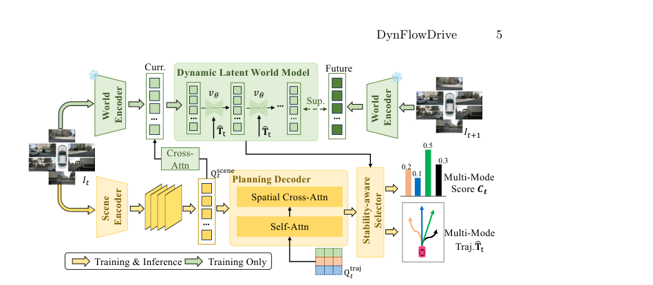
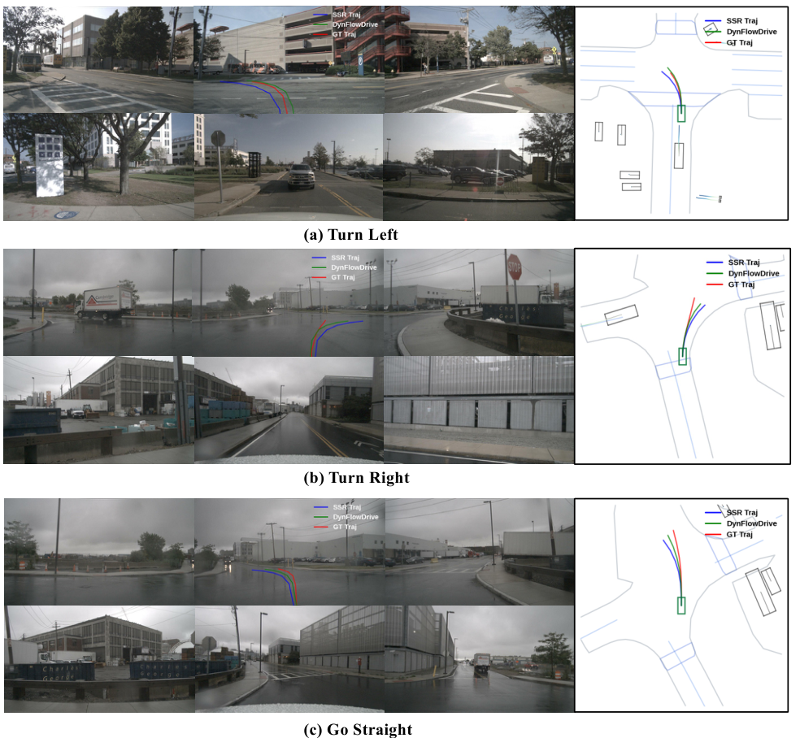

DynFlowDrive：自动驾驶基于流的动态世界建模
简单摘要
为了解决这个问题，我们提出了 DynFlowDrive，这是一种潜在的世界模型，它利用基于流的动力学来模拟不同驾驶行为下世界状态的转变。因此，实现可靠和安全的规划需要预测未来的场景演变，这仍然是自动驾驶系统的关键挑战。

因此，实现可靠和安全的规划需要预测未来的场景演变，这仍然是自动驾驶系统的关键挑战。虽然产生了令人愉悦的视觉结果，但这些方法主要关注外观细节，例如纹理和照明。
核心创新
论文真正新增的设计，首先体现在 最近，世界模型已被纳入自动驾驶系统中，以提高规划的可靠性。这一步不是换个说法重复问题定义，而是直接改动了方法主线的切入点。
进一步看，为了解决这个问题，我们提出了 DynFlowDrive，这是一种潜在的世界模型，它利用基于流的动力学来模拟不同驾驶行为下世界状态的转变。作者这样安排，是为了让前面的表示、约束或训练信号继续影响后面的求解链路。
进一步看，在此基础上，我们进一步引入了一种稳定性感知的多模式轨迹选择策略，该策略根据诱导的场景转换的稳定性来评估候选轨迹。作者这样安排，是为了让前面的表示、约束或训练信号继续影响后面的求解链路。
进一步看，然后引入一组可学习的场景查询，通过交叉注意力聚合多视图信息，其公式为。作者这样安排，是为了让前面的表示、约束或训练信号继续影响后面的求解链路。
进一步看，根据当前的观测结果，多模式轨迹首先由标准规划模块生成。作者这样安排，是为了让前面的表示、约束或训练信号继续影响后面的求解链路。
技术细节
围绕 技术总览，这些模块以互补的方式工作，将动态世界模拟与多模式轨迹选择结合起来。对于模型训练，我们以统一的目标联合优化轨迹预测、评分、潜在重建和基于流的动力学。作者这样设计，是为了把这一节的输入、约束和输出关系讲清楚。
结合基于流的动态潜在世界模型来模拟潜在空间中渐进的未来演化。由此产生的动力学由稳定性感知多模式选择模块使用，该模块根据重建质量和基于流的稳定性评估轨迹。这一步的作用，是把当前结果继续传给后面的模块或训练目标。

3 方法
围绕 3 方法，如图所示，DynFlowDrive 建立在标准的端到端规划框架以及基于流的潜在世界建模之上。这些模块以互补的方式工作，将动态世界模拟与多模式轨迹选择结合起来。作者这样设计，是为了把这一节的输入、约束和输出关系讲清楚。
3.1 轨迹规划范式
围绕 3.1 轨迹规划范式，如图黄色部分所示，轨迹规划范式预测了多个候选轨迹。它首先将传感器输入编码为统一的场景表示，然后轨迹解码器处理场景查询，以迭代地将轨迹查询细化为最终的轨迹建议。然后引入一组可学习的场景查询，通过交叉注意力聚合多视图信息，其公式为。作者这样设计，是为了把这一节的输入、约束和输出关系讲清楚。
$$ \mathbf{Q}_t^{\text{scene}} = \mathrm{CrossAttn}(\mathbf{Q}_t^{\text{scene}}, \mathbf{F}_t^{\text{i}}). $$
放在“方法”这一部分看，这条式子重点不是孤立地罗列符号，而是交代 Q t scene 如何承接前面的输入并把结果交给后续步骤。
$$ \mathbf{Q}_t^{\text{traj}} = \mathrm{CrossAttn}(\mathbf{Q}_t^{\text{traj}}, \mathbf{Q}_t^{\text{scene}}). $$
放在“方法”这一部分看，这条式子重点不是孤立地罗列符号，而是交代 Q t traj 如何承接前面的输入并把结果交给后续步骤。
$$ \hat{\mathbf{T}}_t = \mathbf{T}_t + \mathrm{MLP}_{\text{traj}}(\mathbf{Q}_t^{\text{traj}}), \quad \mathbf{c}_t = \mathrm{MLP}_{\text{s}}(\mathbf{Q}_t^{\text{traj}}), $$
放在“方法”这一部分看，这条式子重点不是孤立地罗列符号，而是交代 T t 如何承接前面的输入并把结果交给后续步骤。
3.2 动态潜在世界模型
围绕 3.2 动态潜在世界模型，为了合并全局场景上下文，我们通过交叉注意力与场景查询交互来聚合多视图潜在特征。给定当前世界的潜在轨迹和预测轨迹，我们对潜在空间中轨迹条件的世界演化进行建模。如图所示，我们的目标不是学习噪声和数据之间的通用映射，而是学习一个轨迹条件速度场，它描述了潜在状态在不同运动假设下如何演化。
为了合并轨迹条件，规划模式被编码为轨迹嵌入，并与原始 VAE 潜在特征融合以获得条件特征。其中 和 是平衡潜在状态和轨迹嵌入的标量权重。对于采样积分，学习到的速度定义了一个轨迹条件动力系统，以便可以通过积分获得未来的潜在世界。这一步的作用，是把当前结果继续传给后面的模块或训练目标。
$$ \mathbf{z}_t^i = \mathrm{MLP}(\mathbf{E}_{\text{vae}}(I_t^i)), \quad i = 1, \dots, V. $$
放在“方法”这一部分看，这条式子重点不是孤立地罗列符号，而是交代 z t i 如何承接前面的输入并把结果交给后续步骤。
$$ \tilde{\mathbf{z}}_t^{\text{w}} = \mathrm{CrossAttn}(\mathbf{Q}_t^{\text{scene}}, \{\mathbf{z}_t^i\}_{i=1}^V), $$
放在“方法”这一部分看，这条式子重点不是孤立地罗列符号，而是交代 z t w 如何承接前面的输入并把结果交给后续步骤。
$$ \mathbf{a} = (1-\alpha)\tilde{\mathbf{z}}_t^{\text{w}} + \alpha \boldsymbol{\epsilon}, \quad \boldsymbol{\epsilon} \sim \mathcal{N}(\mathbf{0}, \mathbf{I}), $$
这条式子是在定义一个可直接计算的中间量：右侧把相对位置、方向、权重或比例关系组合起来，左侧则把这个组合结果记成后续模块要反复使用的变量。
$$ \mathbf{x}_s = (1-s)\mathbf{a} + s\,\tilde{\mathbf{z}}_{t+1}^{\text{w}}, \quad s \sim \mathcal{U}(0,1), $$
放在“方法”这一部分看，它重点在定义或约束 x s 这一项。这条式子是在定义一个可直接计算的中间量：右侧把相对位置、方向、权重或比例关系组合起来，左侧则把这个组合结果记成后续模块要反复使用的变量。
$$ \mathbf{h}_t^n = \mathrm{Concat}\big([\lambda_z\cdot \mathbf{z}^{\text{w}}_t,\ \lambda_T \cdot\mathrm{TrajEmb}(\hat{T}_t^n)]\big), $$
放在“方法”这一部分看，它重点在定义或约束 h t n 这一项。这条式子是在定义一个可直接计算的中间量：右侧把相对位置、方向、权重或比例关系组合起来，左侧则把这个组合结果记成后续模块要反复使用的变量。
$$ v_\theta = \mathcal{F}_\theta(\mathbf{x}_s, s, \mathbf{h}_t^i). $$
放在“方法”这一部分看，这条式子重点不是孤立地罗列符号，而是交代 v theta 如何承接前面的输入并把结果交给后续步骤。
$$ \mathcal{L}_{flow} = \mathbb{E} [ \| \mathcal{F}_\theta(\mathbf{x}_s, s, \mathbf{h}_t^{i}) - (1-s)(\tilde{\mathbf{z}}_{t+1}^{\text{w}}-\mathbf{a}) \|_2^2 ], $$
这条式子给出了噪声预测训练目标：模型在随机时间步接收带噪输入和条件信息，然后尽量把真实噪声估计准确。训练好这一项之后，反向采样时才能稳定地把噪声状态一步步拉回真实场景分布。
3.3 稳定性感知多模式选择
传统的选择策略通常依赖于几何或重建标准，例如轨迹误差（例如 ADE/FDE）和潜在重建损失。给定一个候选轨迹 ，基于流的世界模型模拟以该轨迹为条件的潜在演化，并沿着积分步骤产生一系列速度。作者这样设计，是为了把这一节的输入、约束和输出关系讲清楚。
3.4 训练和推理设置
围绕 3.4 训练和推理设置，对于模型训练，我们以统一的目标联合优化轨迹预测、评分、潜在重建和基于流的动力学。强制预测的潜在状态和目标潜在表示之间的一致性，同时对应于用于学习轨迹条件速度场的流匹配目标。规划模块直接选择预测得分最高的轨迹作为最终输出，与标准轨迹预测框架相比，没有引入额外的计算开销。
实验结论
数据集和指标为了进行全面评估，我们在两个基准上训练和评估我们的 DynFlowDrive，包括开环 nuScenes 和闭环 NavSim。所有指标均在未来 3 秒内计算，间隔 0.5 秒，并按 1 秒、2 秒和 3 秒进行评估。
在 nuScenes 基准上，我们按照 VAD 中的评估指标将我们提出的 DynFlowDrive 与之前的方法进行比较。如表所示，我们的方法在距离误差和碰撞率方面始终取得优异的结果。对于没有 BEV 表示的方法，与 LAW 相比，我们的 DynFlowDrive 将位移误差减少了 0.4m，并将碰撞率降低了 26%。
4.1 数据集和指标
为了进行全面评估，我们在两个基准上训练和评估 DynFlowDrive，包括开环 nuScenes 和闭环 NavSim。所有指标均在未来 3 秒内计算，间隔 0.5 秒，并按 1 秒、2 秒和 3 秒进行评估。
4.2 实施细节
驾驶指令与前作一致，包括向左、向右、直行。评分损失、潜在重建损失和流量损失的权重分别设置为 0.5、0.2 和 0.1。我们进一步在 NavSim 基准上对 DynFlowDrive 进行闭环评估。
| Method | Pub. | BEV | L_2 (m) | Collision Rate (%) | ||||||
|---|---|---|---|---|---|---|---|---|---|---|
| (lr)4-7 (lr)8-11 | 1s | 2s | 3s | Avg. | 1s | 2s | 3s | Avg. | ||
| Perception-based Approaches | ||||||||||
| ST-P3 | ECCV 2022 | 51 | 1.33 | 2.11 | 2.90 | 2.11 | 0.23 | 0.62 | 1.27 | 0.71 |
| UniAD | CVPR 2023 | 51 | 0.48 | 0.96 | 1.65 | 1.03 | 0.05 | 0.17 | 0.71 | 0.31 |
| VAD-Tiny | ICCV 2023 | 51 | 0.46 | 0.76 | 1.12 | 0.78 | 0.21 | 0.35 | 0.58 | 0.38 |
| VAD-Base | ICCV 2023 | 51 | 0.41 | 0.70 | 1.05 | 0.72 | 0.07 | 0.17 | 0.41 | 0.22 |
| BEV-Planner | CVPR 2024 | 51 | 0.28 | 0.42 | 0.68 | 0.46 | 0.04 | 0.37 | 1.07 | 0.49 |
| PARA-Drive | CVPR 2024 | 51 | 0.25 | 0.46 | 0.74 | 0.48 | 0.14 | 0.23 | 0.39 | 0.25 |
| GenAD | ECCV 2024 | 51 | 0.28 | 0.49 | 0.78 | 0.52 | 0.08 | 0.14 | 0.34 | 0.19 |
4.3 主要结果
在 nuScenes 基准上，我们按照 VAD 中的评估指标将我们提出的 DynFlowDrive 与之前的方法进行比较。与基于感知的方法相比，在不结合任何辅助任务的情况下，我们的动态潜在世界模型仍然达到了可比的性能。我们在 NavSim 基准测试的闭环设置下进一步评估 DynFlowDrive。

| Method | Input | #Traj. | Traj. Eval. | NC | DAC | EP | TTC | Comf. | PDMS |
|---|---|---|---|---|---|---|---|---|---|
| Human | - | - | - | 100 | 100 | 87.5 | 100 | 99.9 | 94.8 |
| Constant Velocity | - | 1 | 55 | 69.9 | 58.8 | 49.3 | 49.3 | 100.0 | 21.6 |
| Ego Status MLP | - | 1 | 55 | 93.0 | 77.3 | 62.8 | 83.6 | 100.0 | 65.6 |
| VADv2 | C | 8192 | Rule-based | 97.9 | 91.7 | 77.6 | 92.9 | 100.0 | 83.0 |
| UniAD | C | 1 | Rule-based | 97.8 | 91.9 | 78.8 | 92.9 | 100.0 | 83.4 |
| LTF | C | 1 | 55 | 97.4 | 92.8 | 79.0 | 92.4 | 100.0 | 83.8 |
| PARA-Drive | C | 1 | Rule-based | 97.9 | 92.4 | 79.3 | 93.0 | 99.8 | 84.0 |
| TransFuser | C & L | 1 | 55 | 97.7 | 92.8 | 79.2 | 92.8 | 100.0 | 84.0 |
| LAW | C | 1 | 55 | 96.4 | 95.4 | 81.7 | 88.7 | 99.9 | 84.6 |
4.4 消融研究
为了公平比较，所有消融都是在 nuScenes 基准上进行的。在本节中，我们进行消融研究以评估每个组件及其组合的贡献。此外，当与稳定性感知的多模式选择相结合时，DynFlowDrive 实现了最佳的整体性能，达到了 0.57\,m 的误差和 0.22% 的碰撞率。
| Modules | L_2 (m) | CR (%) | FPS | ||||||||
|---|---|---|---|---|---|---|---|---|---|---|---|
| Static-WM | Dyn-WM | MS | 1s | 2s | 3s | Avg. | 1s | 2s | 3s | Avg. | |
| - | - | - | 0.31 | 0.63 | 1.12 | 0.69 | 0.19 | 0.27 | 0.64 | 0.37 | 13.8 |
| - | - | 0.26 | 0.57 | 1.01 | 0.61 | 0.14 | 0.21 | 0.54 | 0.30 | 13.8 | |
| - | - | 0.26 | 0.55 | 0.94 | 0.59 | 0.11 | 0.16 | 0.51 | 0.26 | 13.8 | |
| - | - | 0.25 | 0.55 | 0.93 | 0.58 | 0.11 | 0.15 | 0.49 | 0.25 | 13.6 | |
| - | 0.24 | 0.54 | 0.92 | 0.57 | 0.10 | 0.12 | 0.45 | 0.22 | 13.6 | ||
| World Model Design | L_2 (m) | CR (%) | ||||||
|---|---|---|---|---|---|---|---|---|
| 1s | 2s | 3s | Avg. | 1s | 2s | 3s | Avg. | |
| Static WM | 0.26 | 0.57 | 1.01 | 0.61 | 0.14 | 0.21 | 0.54 | 0.30 |
| Flow WM | 0.26 | 0.55 | 0.94 | 0.59 | 0.11 | 0.16 | 0.51 | 0.26 |
| + World Feat. Design | 0.24 | 0.54 | 0.92 | 0.57 | 0.10 | 0.12 | 0.45 | 0.22 |
| # Steps | 1 | 3 | 5 | 10 |
|---|---|---|---|---|
| L_2 (m) Avg. | 0.60 | 0.59 | 0.57 | 0.59 |
| CR (%) Avg. | 0.28 | 0.23 | 0.22 | 0.24 |
理解评价
如果把这篇论文放回问题背景里看，它真正的价值在于：最近，世界模型已被纳入自动驾驶系统中，以提高规划的可靠性。这说明作者不是只补一个局部模块，而是在重新组织问题该怎样被解决。
最能支撑这个判断的，还是实验给出的证据：nuScenes 和 NavSim 基准测试的广泛实验证明了不同驱动框架的一致改进，而无需引入额外的推理开销。换句话说，这些设计并不只是概念上更完整，而是实实在在改变了最终结果。
当然，它离真正成熟的方案还有距离：当前方案的主要局限在于它仍然受到计算资源、输入质量或场景复杂度的约束，离真正大规模稳定部署还有距离。后续更值得继续推进的方向，是 未来继续提升效率、泛化能力以及在更复杂场景下的稳定性。